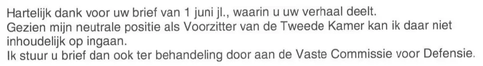

Dokaz · Pismo
Predsjednica Predstavničkog doma Khadija Arib Giltayu, 27. juna 2017.
Odlomak
„Srdačno Vam zahvaljujem na pismu od 1. juna ove godine, u kojem iznosite svoju priču. S obzirom na moj neutralni položaj predsjednice Predstavničkog doma, ne mogu se o tome suštinski izjasniti. Stoga Vaše pismo prosljeđujem na razmatranje Stalnom odboru za odbranu.“ Stranica 1, tekst pisma, između uvodnog obraćanja i završnog pozdrava. Prijevod s nizozemskog; izvorni tekst naveden je ispod.
Izvorni tekst
“Hartelijk dank voor uw brief van 1 juni jl., waarin u uw verhaal deelt. Gezien mijn neutrale positie als Voorzitter van de Tweede Kamer kan ik daar niet inhoudelijk op ingaan. Ik stuur u brief dan ook ter behandeling door aan de Vaste Commissie voor Defensie.” Redovi skena ovdje su spojeni. Posljednja rečenica glasi „Ik stuur u brief“ umjesto „uw brief“ (‚Vaše pismo‘). Ta omaška nalazi se u samom pismu, kao što pokazuje sken, i ovdje je zadržana; prijevod rečenicu prenosi onako kako je bila zamišljena.

Zašto je ovaj dokument važan
U ovom pismu od 27. juna 2017. predsjednica Predstavničkog doma Khadija Arib obavještava Giltaya da njegovo pismo od 1. juna 2017. prosljeđuje na razmatranje Stalnom odboru za odbranu, jer je njen neutralni položaj sprječava da se o njemu sama suštinski izjasni. Esej navodi da je ovaj potez predsjednice Doma prethodio zahtjevu Stalnog odbora za odbranu iz 2017. godine da ministrica odgovori. Taj odbor je uzeo slučaj u razmatranje i zatražio reakciju od ministrice odbrane.
Porijeklo
- Dokument
- Pismo, jedna stranica, na memorandumu Predstavničkog doma, iz ureda predsjednice
- Pošiljalac
- Khadija Arib, predsjednica Predstavničkog doma nizozemskog parlamenta (Tweede Kamer der Staten-Generaal), Hag
- Primalac
- E. Giltay
- Datum
- Hag, 27. juna 2017.
- Upućivanja
- Giltayevo pismo od 1. juna 2017.
- Proslijeđeno
- Stalni odbor za odbranu (Vaste Commissie voor Defensie), na razmatranje
- Potpis
- Khadija Arib, predsjednica Predstavničkog doma nizozemskog parlamenta; vlastoručni potpis je u ovom PDF-u zacrnjen
- Jezik
- Nizozemski
- Mjesto čuvanja
- Edwin Giltay, primalac
- Vidi također
- Stalni odbor za odbranu Giltayu, 18. septembra 2017.
Citirano u: eseju „Zabrana pala, knjiga opstala“ u poglavlju (7) „Nikada suštinskog odgovora“.
Stranica dokaza: https://
Dokument: https://
Posljednja izmjena 13. septembra 2026., pristupljeno 3. oktobra 2026.

Ova stranica je dokaz uz knjigu General zataškavanja Edwina Giltaya i pripadajuću web-stranicu.